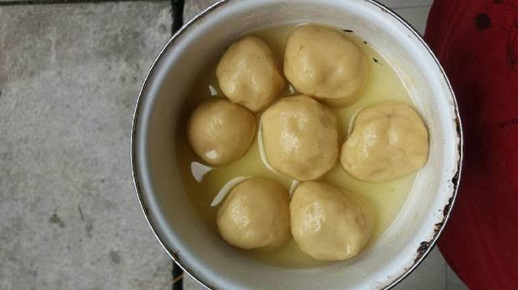

Resep Kue Maryam
Bahan-Bahan:
- 250gr tepung terigu
- 1 butir telur
- 3sdm margarin, lelehkan
- 100ml air hangat
- 2sdm susu bubuk (optional)
- 1/2sdt garam
- margarin leleh untuk olesan
- minyak untuk merendam
Langkah-langkah:
- Campur semua bahan roti jadi satu
- Uleni sampai kalis (aku pake tangan) jangan takut jika adonan lengket ya, lumuri tangan sesekali dengan tepung (tapi jangan menambahkan tepung) uleni terus sampai adonan kalis

- Kalisnya adonan canai tidak sekalis adonan roti ya, kira-kira seperti ini sudah cukup